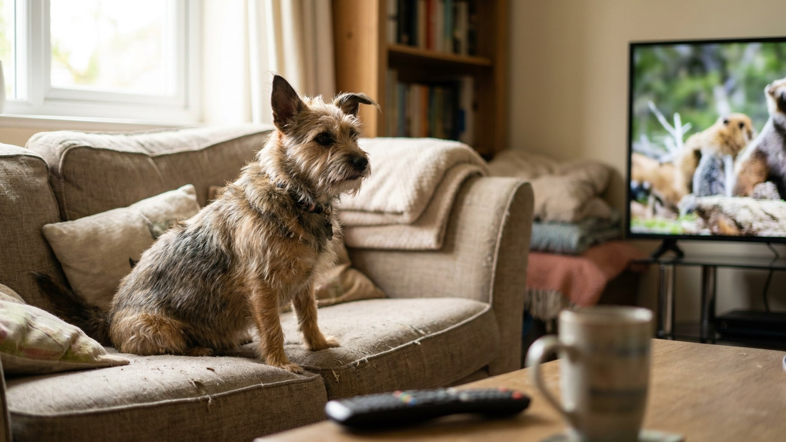

Один хаски тявкает на каждую собаку на экране, другой золотистый ретривер десять лет проспал рядом с включённым телевизором — и ни разу не посмотрел. Почему такая разница? Ответ в физиологии зрения и в том, что именно собака «видит» на экране — это интереснее, чем кажется.
🐾 Всё о вашем питомце — в одном приложении
AI-ветеринар, дневник, напоминания о прививках и уходе. Установите AnimaLife — это бесплатно, в Telegram и MAX.
Зрение собаки отличается от человеческого по нескольким параметрам, критичным для восприятия видео:
Старые ЭЛТ-телевизоры работали на частоте 50–60 Гц — для собаки это выглядело как мигающее слайд-шоу, а не видео. Современные LED/OLED экраны работают на 60–120 Гц и выше — и именно поэтому собаки стали «смотреть телевизор» заметно чаще, чем 15–20 лет назад.
Даже с современным телевизором собаки реагируют очень по-разному. Причин несколько:
Собака реагирует не на «содержание» видео как таковое, а на конкретные визуальные и акустические триггеры:
DogTV — платный видеосервис (есть в App Store, Google Play), созданный специально для собак. Контент разработан с учётом собачьего зрения: скорректированная цветовая гамма (усиленный синий и жёлтый), плавные движения, звуки природы, специально отобранные частоты.
Три режима: «расслабление» (медленные пейзажи, природные звуки), «стимуляция» (активные животные, игровые сцены), «социализация» (другие собаки в разных ситуациях).
По данным исследований, заказанных самим DogTV (что стоит учитывать), собаки в одиночестве с включённым DogTV демонстрировали меньше признаков тревожности, чем без него. Независимых исследований меньше, но анекдотические свидетельства от владельцев достаточно устойчивые: часть собак действительно успокаивается на этом контенте.
Несколько практических рекомендаций:
Экран с современной частотой обновления не вреден для глаз собаки — так же, как и для человека при умеренном использовании. Вопросы о вреде для зрения, которые возникают у хозяев, связаны с ЭЛТ-телевизорами прошлого поколения — там мигание действительно создавало нагрузку. Современные экраны этой проблемы не имеют.
При длительном смотрении в условиях низкого освещения усиливается зрительная нагрузка — как и у людей. Просто не оставляйте телевизор включённым в тёмной комнате на несколько часов.
Для собак с тревожностью разлучения экран с подходящим контентом может стать частью комплекса обогащения среды: телевизор + нюхательный коврик с едой + успокаивающая музыка. Ни один из этих инструментов не решает тревожность разлучения сам по себе — но в сочетании снижают уровень стресса в первые часы отсутствия хозяина.
🐾 Спросите AI-ветеринара прямо сейчас
AnimaLife — приложение, где AI-ветеринар отвечает на вопросы о кошке или собаке 24/7. Бесплатно, без записи и очередей.
🐾 Понравился разбор?
Подпишитесь на канал — каждый день разбираем по одному тревожному симптому у кошек и собак: что в пределах нормы, а когда пора к врачу. Подпишитесь, чтобы не пропустить разбор, который может спасти здоровье вашего питомца.